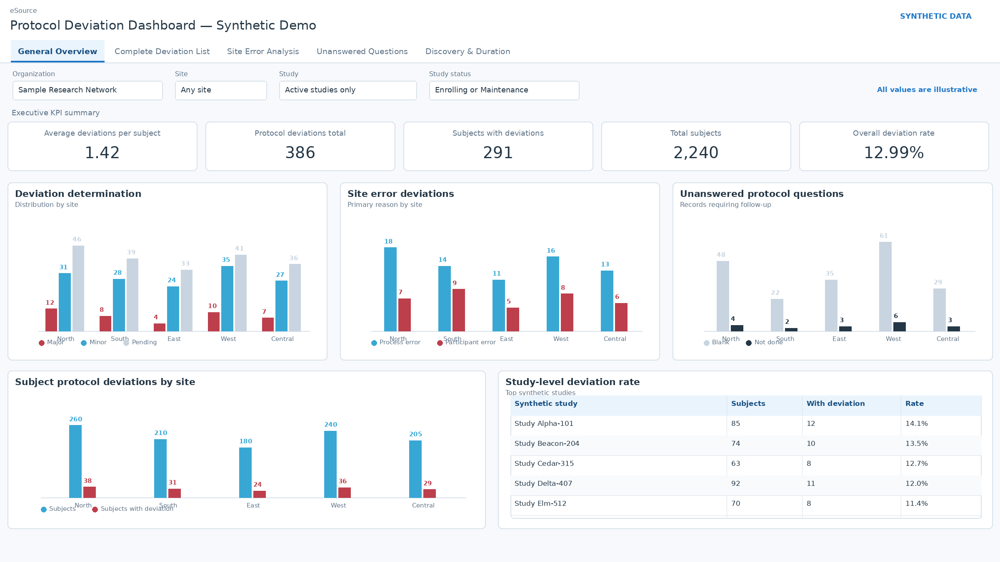
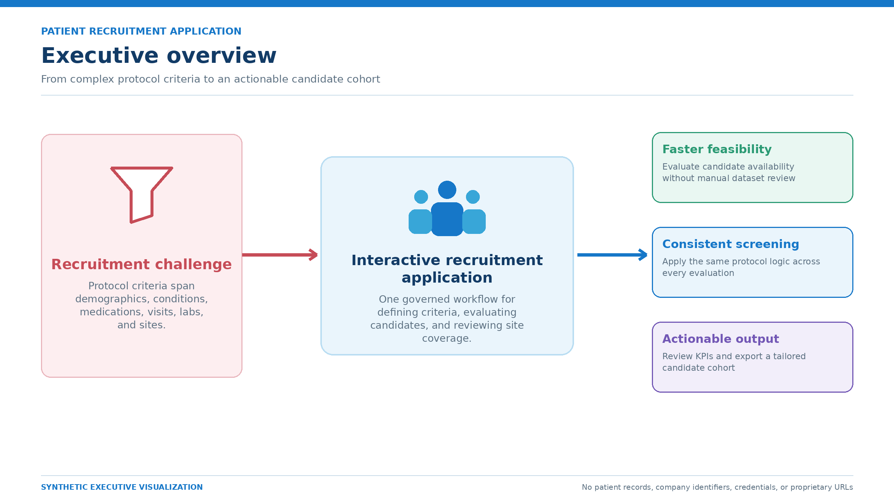
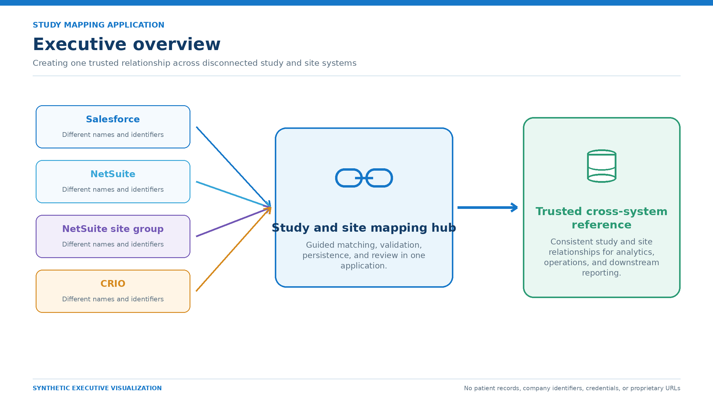
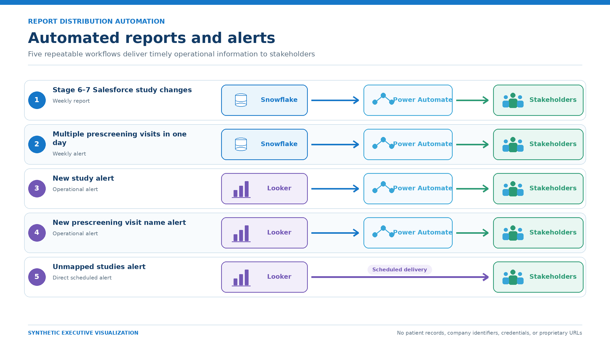

8+ Years
Data, databases, analytics, and production support.
Clinical Data Analytics • SQL • BI • Automation
I build dashboards, data applications, reporting workflows, and automation that help teams understand performance, investigate data issues, and make better decisions.
Data, databases, analytics, and production support.
Clinical research reporting and operational analytics.
Dashboards and recurring reporting assets supported.
Large-scale validation, transformation, and reconciliation.
Capabilities
I work across the reporting path—from source data and transformations to dashboards, validation, automation, and stakeholder delivery.
Recruitment, study operations, visits, deviations, laboratory data, and operational KPIs.
Looker and Power BI dashboards, executive reporting, KPI design, and recurring reports.
Snowflake, dbt, SQL transformations, ETL/ELT, modeling, and data quality checks.
Python, Power Automate, Azure DevOps, scheduled reporting, validation, and workflow automation.
Selected work
Each case study is presented through synthetic or anonymized visuals. Corporate data, patient information, internal identifiers, and proprietary implementation details are excluded.

Clinical operations dashboard for monitoring deviation KPIs, classifications, site errors, unanswered questions, and deviation timing.
Looker · SQL · Clinical Operations Analytics · Data Quality
View case study →
Interactive cohort feasibility and recruitment application using clinical, demographic, medication, laboratory, visit, and site criteria.
Snowflake · Snowpark · Python · Streamlit · SQL
View case study →
Streamlit mapping application that aligns study and site records across Salesforce, NetSuite environments, and CRIO with Snowflake persistence.
Streamlit · Snowflake · Salesforce · NetSuite · CRIO
View case study →
Five recurring reporting and alert automations using Snowflake or Looker with Power Automate and stakeholder delivery workflows.
Snowflake · Looker · SQL · Power Automate · Reporting Automation
View case study →Credentials
SQL Associate · Data Engineer Associate · Data Analyst Associate · Data Literacy
Bachelor of Science in Computer Engineering with a background in enterprise systems and technical problem solving.
Data analytics & engineering
SQL, dashboards, Snowflake, dbt, analytics, automation, and reporting troubleshooting.